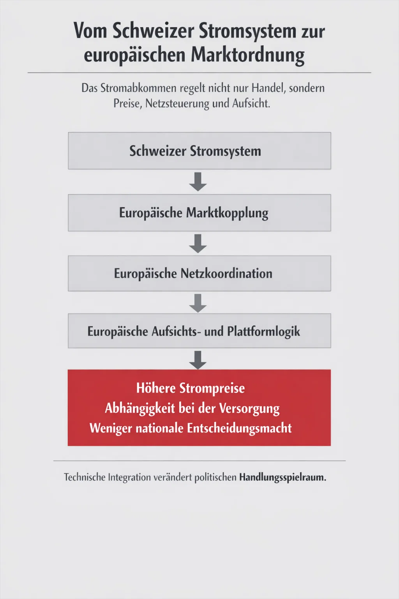
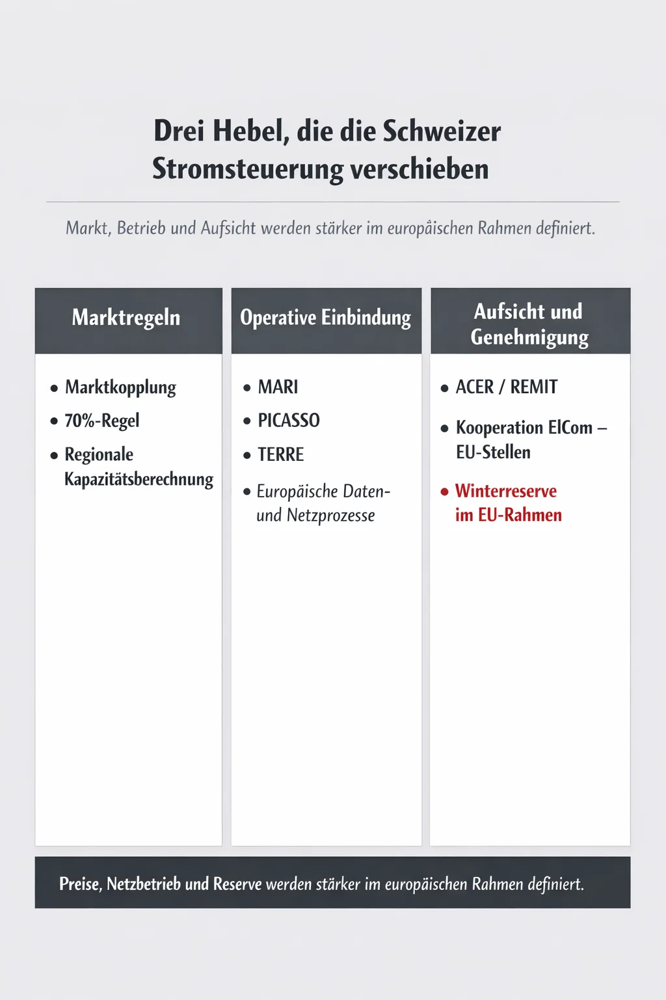
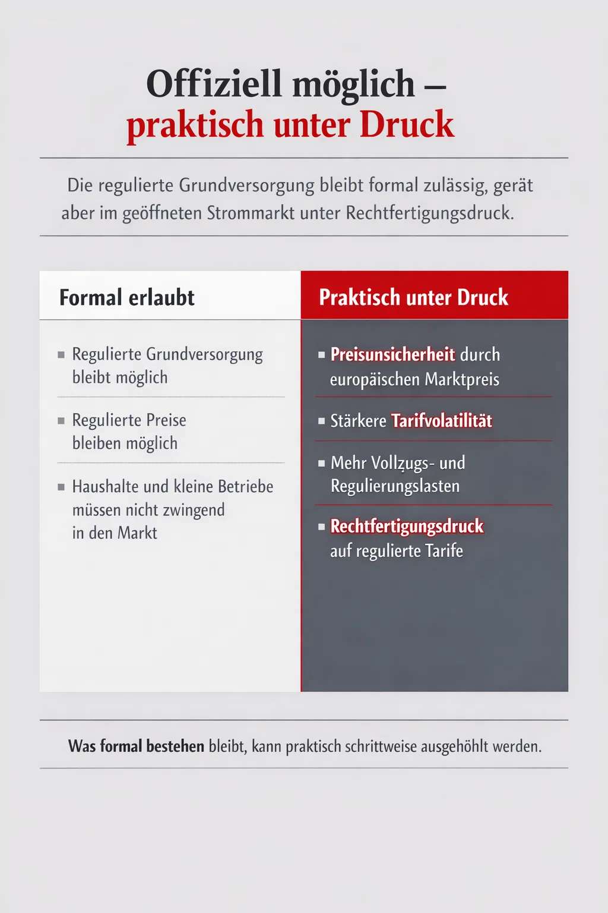
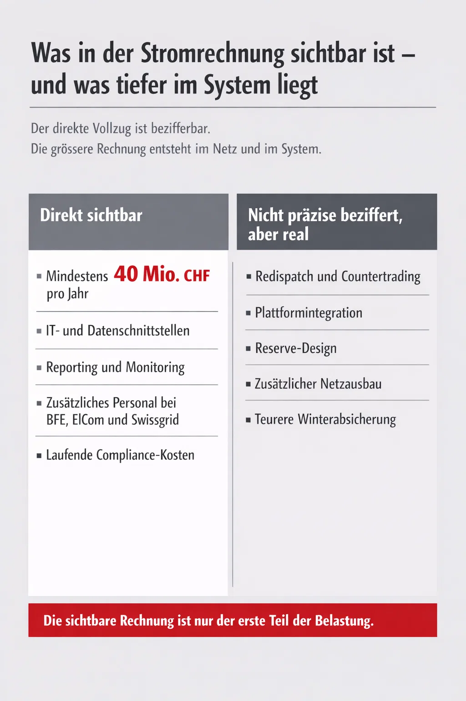

Worum geht es?
Das Stromabkommen regelt drei zentrale Dinge: wie die Schweiz am europäischen Strommarkt teilnimmt, wie das Schweizer Netz in den europäischen Verbund eingebunden wird, und wie Versorgungssicherheit koordiniert werden soll.
Die Schweiz liegt geografisch im Herzen des europäischen Stromnetzes und verfügt über grosse Wasserkraftkapazitäten und Speicher. Das macht sie für die EU wertvoll – und für die Schweiz selbst bedeutsam. Gleichzeitig ist die Schweiz im Winter auf Stromimporte angewiesen.
Bisher funktionierte Stromhandel zwischen Schweiz und EU bilateral und ohne gemeinsame Marktregeln. Mit dem neuen Abkommen wird das anders: Die Schweiz übernimmt europäische Marktregeln, bindet sich an europäische Plattformen und Netzkoordinationsprozesse – und muss künftige Änderungen dynamisch nachvollziehen.
Das klingt technisch. Praktisch bedeutet es: Was Strompreise sind, wie viel Strom über die Grenzen fliesst, und wie eng die Schweiz an europäische Krisenlogik gebunden ist – das wird nicht in Bern entschieden.
Quelle: Stromabkommen, Art. 1–4, Anhang I; Erläuternder Bericht des Bundesrates, 13. Juni 2025, Ziff. 2.11.6, S. 615–632.
Die fünf Kernelemente
Das Abkommen regelt fünf eng verflochtene Bereiche:
1. Marktkopplung: Vom nationalen zum europäischen Handel
Die Schweiz schliesst sich der europäischen Marktkopplung an – das heisst: Strompreise und Grenzkapazitäten werden nicht mehr national getrennt berechnet, sondern europäisch gemeinsam.
Was das konkret ändert:
- Der Day-Ahead-Markt (Stromhandel für den nächsten Tag) wird mit dem europäischen Verbund gekoppelt.
- Der Intraday-Markt (kurzfristige Anpassungen) folgt demselben Muster.
- Grenzkapazitäten (wie viel Strom über die Leitungen fliessen darf) werden nach europäischen Regeln berechnet.
Der Vorteil: Die Schweiz gewinnt Zugang zu grösseren, liquideren Märkten. Handel wird stabiler, Preisfindung transparenter.
Der Preis: Die Schweiz hat weniger Kontrolle über ihre Grenzkapazitäten. Unter der europäischen «70%-Regel» sollen 70 Prozent der grenzüberschreitenden Leitungskapazität dem Markt zur Verfügung stehen – statt dass die Schweiz diese für nationale Notfälle zurückhalten kann. Das erhöht die Abhängigkeit vom europäischen Markt, besonders im Winter.
Quelle: Stromabkommen, Art. 9; Verordnung (EU) 2019/943, Art. 21–26; Faktenblatt Stromabkommen, Der Bundesrat, 13. Juni 2025, S. 1–2.
2. Regelenergie: Schweizer Netz wird europäisches Werkzeug
Swissgrid (der Schweizer Netzbetreiber) wird an drei europäischen Regelenergieplattformen angebunden: MARI, PICASSO und TERRE. Diese Plattformen gleichen Ungleichgewichte im Stromnetz in Echtzeit aus.
Was das heisst: Wenn in Polen plötzlich ein Kraftwerk ausfällt, kann die Schweiz automatisch Regelenergie bereitstellen – und dabei profitabel verdienen. Aber: Die Schweiz wird damit auch automatisch Teil europäischer Gleichgewichtsmechaniken und unterliegt europäischen Prioritäten.
Das operative Problem: Je stärker Swissgrid in europäische Prozesse eingebunden wird, desto weniger nationale Steuerung hat die Schweiz. Methodiken, Datenflüsse und Betriebsstandards werden europäisch geprägt, während die nationale Verantwortung bei Swissgrid bleibt.
Quelle: Stromabkommen, Art. 10; EB GL (Electricity Balancing Guideline); Erläuternder Bericht, Ziff. 2.11.6.7, S. 619–620.
3. Kapazitätsberechnung: Weniger nationale Engpassabschottung, mehr Redispatch
Die Berechnung, wie viel Strom an den Grenzen gehandelt werden darf, erfolgt künftig regional koordiniert. Das bedeutet: Engpässe im Schweizer Netz können nicht mehr rein national gelöst werden – die Lösung wird europäisch mitbestimmt.
Im Klartext: Wenn die Schweiz einen Netzengpass hat, muss sie nicht nur ihre Kraftwerkseinsätze ändern (Redispatch), sondern auch grenzüberschreitende Flüsse anpassen. Das ist technisch nachvollziehbar, kostet die Schweiz aber Geld – und Kontrolle.
Die 70%-Regel verschärft das weiter: Sie erschwert diskriminierende Abschottung, erzeugt aber auch ständigen internen Koordinationsbedarf und höhere Systemkosten.
Quelle: Stromabkommen, Art. 9; Verordnung (EU) 2015/1222 (CACM); Erläuternder Bericht, Ziff. 2.11.6.7, S. 619–620.
4. Krisenvorsorge: Koordination ersetzt nicht nationale Macht
Die Schweiz wird in europäische Risikoszenarien und Vorsorgepläne eingebunden. Im Normalbetrieb hilft das – Koordination ist rational. Im Krisenfall gibt es keine automatische Liefergarantie.
Was Befürworter sagen: Der Rahmen sichert die Zusammenarbeit und erhöht die Chancen, dass Strom auch in kritischen Zeiten fliesst.
Was die Realität ist: Im Fall echter Knappheit entscheiden nationale Prioritäten. Frankreich wird französische Haushalte schützen, nicht die Schweiz versorgen. Das Abkommen schafft bessere Prozesse, keine Liefergarantie.
Die kritische Frage: Die Schweiz hat ein Winterdefizit – im Dezember bis Februar braucht sie Importe. Das Abkommen verbessert die Koordination, ersetzt aber nicht die eigene Vorsorge. Reserven, Wasserkraftausbau, Pumpspeicher, Netzausbau – das ist Plan B, wenn Koordination nicht hilft.
Quelle: Stromabkommen, Art. 11; Verordnung (EU) 2019/941 (Risikovorsorge); Faktenblatt Stromabkommen, S. 2–4.
5. Markttransparenz und Aufsicht: Mehr Reporting, mehr Kontrolle
Mit den REMIT-Regeln (Regulation on Wholesale Energy Market Integrity and Transparency) werden Melde- und Überwachungspflichten ausgebaut.
Das bedeutet: Jeder Stromhandel muss gemeldet werden, Datenflüsse werden standardisiert, die Aufsicht durch die EU-Agentur ACER wächst.
Für Marktteilnehmer: Mehr Compliance-Anforderungen, mehr IT-Aufwand.
Für die Schweiz: ElCom (die nationale Stromaufsicht) muss mit ACER und anderen EU-Stellen kooperieren. Das bedeutet dauerhafte Integration in europäische Überwachungsprozesse.
Quelle: Stromabkommen, Art. 10; Verordnung (EU) 2024/1106 (REMIT); Erläuternder Bericht, Ziff. 2.11.6.15.1–2.11.6.15.2, S. 625–627.

Marktöffnung: Der systemische Druck auf die Grundversorgung
Das Stromabkommen macht die Marktöffnung zur Vertragsobliegenheit.
Die Schweiz muss die freie Lieferantenwahl für alle Endverbraucher gewährleisten – Haushalte, Gewerbe, Industrie, niemand ausgenommen.
Was theoretisch erlaubt bleibt
Das Faktenblatt hält ausdrücklich fest: Die Schweiz darf eine regulierte Grundversorgung mit regulierten Preisen beibehalten. Haushalte und kleine Betriebe müssen nicht ins Marktmodell wechseln.
Das klingt beruhigend. Aber es ist formuliert als Möglichkeit, nicht als Schutz.

Was praktisch passiert
Sobald Marktöffnung vollständig ist und Nichtdiskriminierung strengere Massstäbe setzt, gerät die Grundversorgung unter Druck – nicht weil sie verboten wird, sondern weil sie sich rechtfertigen muss.
Konkret für Haushalte und Gewerbe:
- Preisunsicherheit: Der Marktpreis wird durch die teuerste noch benötigte Produktion im Verbund mitbestimmt. Solange Gas teuer ist, teuer bleibt auch Strom – unabhängig von Schweizer Wasserkraft.
- Tarifvolatilität: Wenn Beschaffung stärker marktbasiert erfolgt, schlagen Preisschwankungen schneller auf Tarifverhältnisse durch.
- Vollzugslasten: Kantonalwerke und Gemeinden müssen mit komplexeren regulatorischen Anforderungen, Transparenzpflichten und Abgrenzungen zwischen Markt- und Grundversorgung leben.
- Rechtfertigungsdruck: Regulierte Tarife müssen sich gegen europäische Marktlogik begründen. Das ist formal möglich, wird aber mit jedem Jahr häufiger hinterfragt.
Quelle: Stromabkommen, Art. 7; Faktenblatt Stromabkommen, S. 3–4; Erläuternder Bericht, Ziff. 2.11.6.5 und 2.11.6.15.7, S. 618, 629–630.
Winterreserve: Von nationaler Vorsorge zur europäischen Genehmigungspflicht
Die Winterreserve ist eines der politisch sensibelsten Themen des ganzen Dossiers.
Heute versteht die Schweiz Winterreserve als Teil ihrer eigenen Sicherheitsvorsorge – ein Mechanismus, den Bern selbst ausgestaltet. Neu wird diese Reserve stärker in die europäische Logik von Kapazitätsmechanismen, Beihilfenprüfung und Ausschreibungsregeln eingezogen.
Was das heisst
Beihilfenrecht: Reserven, die der Staat finanziert oder fördert, fallen unter EU-Beihilferecht. Das heisst nicht, dass die Schweiz keine Winterreserve mehr bauen darf. Es heisst, dass sie von nun an:
- Technologieneutral ausschreiben muss (nicht einfach «Gaskraftwerke, bitte»)
- Verhältnismässigkeit nachweisen muss
- Möglicherweise auch Angebote aus dem Ausland zulässt (Cross-Border-Teilnahme)
- Das Design europäisch genehmigt erhalten muss
Die praktische Verschiebung: Der letzte Wortkatalog bei der Winterreserve liegt nicht mehr nur bei Bern. Er liegt bei der Vereinbarkeit mit dem übernommenen europäischen Rahmen.
Quelle: Stromabkommen, Art. 9 und 12–19; Verordnung (EU) 2019/943, Art. 21–26; Erläuternder Bericht, Ziff. 2.11.6.10, S. 621–622.
Wasserkraft, Kantone, Gemeinden: Vorrangrechte unter Druck
Historische Vorrang- und Abnahmerechte bei Grenz- und Rheinwasserkraft sind für die Schweiz nicht bloss Randfragen der Energieversorgung. Sie bestimmen mit, wer Wasserkraft wirtschaftlich nutzen kann, wer von günstigen Bezugsrechten profitiert – und welchen Wert kantonale und kommunale Beteiligungen haben.
Unter europäischer Gleichbehandlungs- und Marktzuteilungslogik geraten solche Rechte unter Druck. Sie werden nicht formell abgeschafft, aber schrittweise in marktbasierten Zuteilungsprinzipien «normalisiert».
Für kantonale und kommunale Eigentümer konkret:
- Bisher geschützte oder historisch gewachsene Bezugspositionen werden schwächer
- Wirtschaftliche Sonderstellung verliert Wert
- Künftige Konzessions- und Nutzungsmodelle orientieren sich an Marktpreisen, nicht an «fairen» Paritätsprinzipien
Das ist politisch brisant, weil damit nicht nur Strom, sondern auch öffentlich geprägtes Vermögen und kantonale/kommunale Ertragsgrundlagen betroffen sind.
Quelle: Stromabkommen, Art. 8 und 11; Erläuternder Bericht, Ziff. 2.11.6.6 und 2.11.6.9, S. 618–621.
Kosten und Verteilung: Wer profitiert – wer trägt die Lasten
Wer profitiert
- Grosse Marktakteure, Handelsabteilungen: Sie gewinnen Planbarkeit, standardisierte Prozesse, bessere Grenzkapazitäten.
- Swissgrid und Netzbetrieb: Tiefere Integration, klarere Prozesse – auch wenn der operative Aufwand wächst.
- Flexible Kraftwerksbetreiber: Marktzugang zu MARI, PICASSO, TERRE bringt zusätzliche Einnahmen.
- Die EU: Schweizer Speicher- und Regelleistung stabilisieren das gesamteuropäische Netz. Die EU gewinnt damit einen systemisch wichtigen Partner im Herzen des Verbunds zurück.
Wer trägt die Lasten
- Stromkunden: Über steigende Systemkosten, höhere Tarife, weniger Steuerungsspielraum der lokalen Versorger.
- KMU und Gewerbe: Volatilere Beschaffungskosten, höherer Verwaltungsaufwand.
- Behörden, Swissgrid, Werke: Mehr Integrations-, IT-, Reporting- und Vollzugslasten.
- Infrastruktur: Bei stärkerer Netzbelastung fallen Netzausbaukosten an – für Leitungen, Umspannwerke, IT-Backbone.
Fazit: Punktueller Nutzen trifft auf breiter verteilte Lasten.
Die Kostenbilanz: Was sichtbar ist – und was nicht

Sichtbare direkte Umsetzungskosten
Eine konservative Untergrenze für direkt zurechenbare Integrations-, Regulierungs-, Aufsichts- und Vollzugskosten liegt bei rund 40 Mio. CHF pro Jahr.
Enthalten sind:
- IT- und Datenschnittstellen
- Reporting und Monitoring
- Zusätzliches Personal bei BFE, ElCom und Swissgrid
- Laufende Betriebs- und Compliance-Kosten
Was nicht enthalten ist – aber real ansteht
Die grössere Rechnung liegt bei möglichen Netz- und Systemfolgekosten:
- Redispatch und Countertrading: Kostenpflichtige operative Gegensteuerung bei Engpässen
- Plattformintegration: Höhere IT-Lasten, Systemstandards
- Reserve-Design und zusätzlicher Netzausbau: Bei stärkerer Systembeanspruchung werden diese Kosten erheblich
- Winterversorgung: Im ungünstigen Fall müssen die Importe teurer gesichert werden
Ehrliches Preisschild: Mindestens 40 Mio. CHF pro Jahr sind robust. Bei stärkerer Systembeanspruchung sind hohe zweistellige bis dreistellige Millionenbeträge über die Jahre möglich. Für grösseren Netzausbau bei Leitungen, Umspannwerken und IT-Backbone fehlen heute abschliessende Projektkalkulationen. Ein Teil der möglich anfallenden Kosten ist deshalb real, aber noch nicht präzise bezifferbar.
Quelle: Erläuternder Bericht, Ziff. 2.11.9.1 und 2.11.9.3, S. 677–685.
Souveränität und Handlungsspielraum
Rechtsübernahme und dynamische Anpassung
Das Stromabkommen bindet die Schweiz an zentrale EU-Rechtsakte:
- Elektrizitätsbinnenmarkt-Verordnung (EU) 2019/943
- Elektrizitätsbinnenmarkt-Richtlinie (EU) 2019/944
- Risikovorsorge-Verordnung (EU) 2019/941
- Markttransparenz-Verordnung REMIT
- Mehrere Netzkodizes
Diese Rechtsakte sind nicht statisch. Sie werden laufend weiterentwickelt. Die Schweiz muss diese Weiterentwicklungen dynamisch nachvollziehen – ohne je den Verhandlungstisch sitzen zu haben, wenn sie entstanden sind.
Quelle: Stromabkommen, Art. 4 und Anhang I; Übersicht EU-Gesetzgebungsakte Paket CH–EU, EDA, 13. Juni 2025, Strom, S. 19–20.
Wer entscheidet im Konfliktfall?
Streitfälle laufen über ein Schiedsgericht. Bei Fragen der EU-Rechtsauslegung muss dieses Schiedsgericht den Europäischen Gerichtshof (EuGH) anrufen. Dessen Urteil ist bindend.
Das heisst: Wenn die Schweiz eine nationale Sonderlösung (etwa bei der Winterreserve oder beim Kapazitätsmanagement) rechtfertigen will, und die EU widerspricht, entscheidet nicht ein Schweizer Gericht. Es entscheidet Luxemburg.
Die institutionelle Bindung
Mit dem Abkommen sind die Schweiz und ihre Akteure vollständig teilnahmeberechtigt bei relevanten EU-Einheiten, Gremien und Plattformen. Das ist der Vorteil – und gleichzeitig die Bindung.
Was das bedeutet: Neue Regeln, neue Methodiken und neue Pflichten entstehen nicht in Bern, sondern im gemeinsamen oder europäischen Rahmen. Die Schweiz muss dann entscheiden: nachziehen oder Widerstand leisten.
Politisch heikel ist, dass Nichtübernahme oder Verzögerung nicht nur im Stromdossier selbst Kosten auslösen. Die institutionelle Logik des gesamten Pakets eröffnet auch dossierübergreifenden Druck. Wer im Strombereich blockiert, riskiert Reibung – und eine breitere Belastung des Verhältnisses zur EU.
Quelle: Stromabkommen, Art. 25–32 (Streitbeilegung); Institutionelles Protokoll des Pakets.
Was die Schweiz dafür gewinnt
Real vorhandene Vorteile
- Marktzugang: Die Schweiz gewinnt Zugang zur europäischen Marktkopplung (SDAC und SIDC) und damit zu grösseren, liquideren Märkten.
- Regelenergieplattformen: Swissgrid kann an MARI, PICASSO und TERRE teilnehmen – das stabilisiert das Netz und bringt zusätzliche Einnahmen.
- Planbarkeit: Klarere Regeln und koordinierte Prozesse reduzieren Unsicherheit im Normalbetrieb.
- Gegenseitigkeit: Die Schweiz ist nicht bloss Abnehmerin, sondern Transit-, Speicher- und Flexibilitätsland. Das europäische Netz profitiert selber davon, dass die Schweiz grosse Mengen durchleitet, Lasten ausgleicht und über Wasserkraft sowie Speicher flexibel reagieren kann.
Was aber nicht funktioniert
Das Abkommen verbessert die Koordination im Regelbetrieb. Im Krisenfall ersetzt es keine nationale Macht über die eigene Versorgung. Gerade deshalb bleibt die Schweiz trotz Abkommen auf eigene Reserven, eigene Vorsorge und eigenen politischen Handlungsspielraum angewiesen.
Die Alternative ist nicht schlicht «Abkommen oder Dunkelheit». Die Schweiz hat mehr Handlungsmöglichkeiten als oft dargestellt: eigene Reserven aufbauen, die Grundversorgung regulieren, Wasserkraft und Pumpspeicher stärken, Netze und Steuerungssysteme ausbauen, über Effizienz und Lastmanagement gegensteuern.
Diese Optionen machen ein Stromabkommen nicht überflüssig. Sie zeigen aber: Kooperation ist nicht identisch mit Alternativlosigkeit.
Quelle: Faktenblatt Stromabkommen, S. 2–4; Stromabkommen, Art. 7, 9, 10, 11.
Fazit
Das Stromabkommen ist nicht nur ein Energiedossier. Es ist eine Verschiebung von Marktordnung, Vollzug, Reservepolitik und politischem Handlungsspielraum.
Der sachliche Nutzen ist vorhanden: mehr Koordination, bessere Einbindung, mehr Planbarkeit. Dem stehen jedoch nicht nur klar bezifferbare Vollzugs- und Integrationskosten gegenüber, sondern auch ein erheblicher Block ungewisser Folgekosten.
Dieser Preis heisst: mehr Regulierung, mehr Bindung an fremde Methodiken, mehr Konfliktkosten im Streitfall und ein engerer Rahmen für Schweizer Sonderwege. Hinzu kommt der nicht konkret abschätzbare Preis aus möglichem Netzausbau, Systemumbau und zusätzlichen Reserve- und Beschaffungskosten.
Die Schweiz verhandelte nicht als Randgebiet, sondern als zentraler Stromknoten im Herzen des kontinentaleuropäischen Verbundnetzes. Transit, Kapazitätsberechnung und Netzstabilität in Zentraleuropa lassen sich ohne die Schweiz nicht sauber denken. Ihre Verhandlungstrümpfe waren real.
Umso wichtiger ist eine nüchterne Bilanz: Ob der ausgehandelte Preis diesen Trümpfen entspricht.
Detailanalyse
Quellen und Vertiefung
- Stromabkommen Schweiz–EU – Bundesamt für Energie BFE, 13. Juni 2025
www.bfe.admin.ch - Faktenblatt Stromabkommen – Der Bundesrat, 13. Juni 2025, S. 1–4
eda.admin.ch – Paket CH–EU - Erläuternder Bericht zum Paket Schweiz–EU – EDA/Bundesrat, 13. Juni 2025
Besonders relevant: Ziff. 2.11.6.1–2.11.6.17, S. 615–632
eda.admin.ch – Erläuternder Bericht - Übersicht EU-Gesetzgebungsakte Paket CH–EU – EDA, 13. Juni 2025
Stromrelevante Rechtsakte, S. 19–20
eda.admin.ch – Paket CH–EU - Primäre Rechtsquellen (EU):
- Verordnung (EU) 2019/943 – Elektrizitätsbinnenmarkt (EUR-Lex)
- Verordnung (EU) 2019/941 – Risikovorsorge im Elektrizitätssektor (EUR-Lex)
- Verordnung (EU) 2015/1222 (CACM) – Kapazitätszuweisung (EUR-Lex)
- Verordnung (EU) 2017/1485 (SO GL) – Systembetrieb (EUR-Lex)
- Verordnung (EU) 2017/2195 (EB GL) – Regelenergie (EUR-Lex)
- Verordnung (EU) 2024/1106 (REMIT) – Markttransparenz (EUR-Lex)
- Swissgrid:
- Annual Report 2024 / Sustainability Report 2024
- «An electricity agreement with the European Union remains important for Swissgrid» – News, 5. März 2024